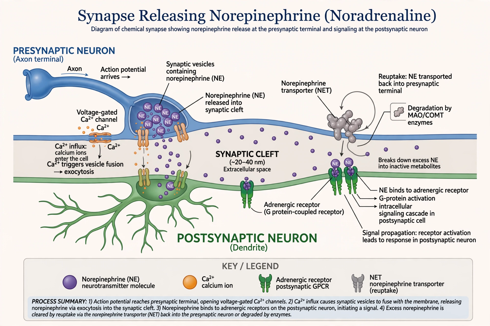

Norepinephrine
From Wikipedia, the free encyclopedia

Norepinephrine (NE), also called noradrenaline (NA), is an organic chemical in the catecholamine family that functions in the brain and body both as a Hormone and a Neurotransmitter. Released by the Locus coeruleus (the brain's alarm nucleus), by sympathetic nerve endings and by the adrenal medulla, it drives arousal, vigilance, blood-pressure control and the Fight-or-flight response. Clinically it is a first-line vasopressor in septic shock and the target of antidepressants (SNRIs) and ADHD drugs (atomoxetine).
Synthesis and action
Norepinephrine is synthesised from dopamine by dopamine β-hydroxylase and converted onward to epinephrine in the adrenal medulla. Its receptors (α1, α2, β1) constrict vessels, raise heart rate and contractility, and gate attention: too little NE tracks with inattention and depressed arousal; too much with panic and hypervigilance. Reuptake by the NET transporter terminates its synaptic action — the mechanism exploited by several drug classes.
History
Identified as the sympathetic transmitter by Ulf von Euler (1946, Nobel 1970), norepinephrine anchored the catecholamine hypothesis of depression and remains a pillar of autonomic pharmacology — its dual name (Latin ad renalem versus Greek epi nephros) a fossil of transatlantic naming wars.